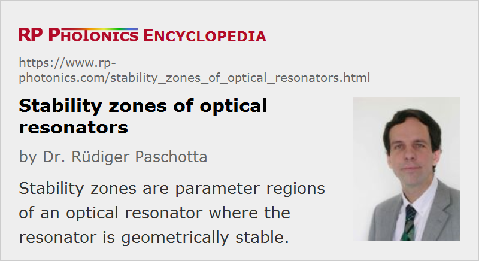

Stability Zones of Optical Resonators
Definition: parameter regions of an optical resonator where the resonator is geometrically stable
German: Stabilitätszonen
How to cite the article; suggest additional literature
Author: Dr. Rüdiger Paschotta
When a parameter of a laser resonator (optical cavity) such as an arm length or the dioptric power (inverse focal length) of the focusing element in the resonator is varied, the resonator may go through one (for ring resonators) or two (for standing-wave resonators) stability zones.
In a purely geometric analysis, stability means that a ray injected into the optical system will stay at a finite distance from the axis even after many round trips. In this regime, the resonator modes (self-reproducing field configurations, calculated with wave optics) are of much simpler structure than for an unstable resonator. The properties of the resonator modes can vary strongly within a stability zone and also between different zones.
Properties of Stability Zones for Linear Resonators
The detailed properties of stability zones are very important for the issue of resonator design, in particular as a part of laser design, because the properties of a laser resonator can be essential for laser performance. Resonator stability zones have been explored in a huge volume of literature. A paper by Magni [2] presented a detailed analysis for linear resonators. Some important properties are discussed in the following:
- At the edges of the stability zones of a linear resonator, the beam radii at the resonator end mirrors can either diverge or vanish.
- In the case of a variable lens, such as the thermal lens in the laser gain medium, the beam radius at the position of the variable lens goes through a minimum somewhere within a stability zone, and diverges at the stability edges.
- Both stability zones of a linear resonator have the same minimum beam radius at the variable lens, but are very different in other respects. In particular, one of the stability zones (called zone II according to Magni) has a stability edge where the mode sizes on both end mirrors diverge. At this point, the alignment sensitivity of the resonator also diverges, so that stable operation of a laser near such a point is difficult to achieve: not only mirror tilts, but also asymmetries of the thermal lens, as can occur during pump alignment, critically affect the transverse position of the laser mode. The other stability zone, called zone I, does not exhibit such a divergence of alignment sensitivity, and is generally overall better than zone II in terms of stability.
- The width of the stability zones in terms of focusing power of the variable lens is twice the wavelength divided by π times the square of the minimum beam radius at the variable lens. This means that resonators with a large minimum mode size inevitably have narrow stability regions.
- Only one of the two stability zones of a linear resonator may be observed, e.g. when the variable lens is very close to one end mirror (shifting zone I into a regime with very strong focusing), or when both stability zones merge to form a single zone of twice the width.
- In cases without circular symmetry around the beam axis, the stability zones for the horizontal and vertical direction can be different, and may not overlap.
Properties of Stability Zones for Ring Resonators
Similar to Ref. [2] for linear resonators, Ref. [3] presented an analysis for ring resonators. These have somewhat simpler properties, which however are similar to those of linear resonators in many respects:
- Ring resonators have only a single stability zone.
- At both edges of the stability zone, the mode radii diverge. However, only at one of the edges the alignment sensitivity also diverges, whereas it reaches a minimum on the other stability edge.
- The minimum mode size at the thermal lens again determines the width of the stability region in terms of dioptric power, but that width is twice as large as for a linear resonator.
The differences to linear resonators are related to the fact that in a ring resonator the laser beam passes the thermal lens only once per round trip, instead of twice as in a linear resonator.
Consequences for Resonator Design
Some of the consequences of such properties for the design of laser resonators (particularly for solid-state bulk lasers) are shortly discussed in the following:
- High-power solid-state lasers are often designed with a relatively small minimum mode size in the gain medium, because otherwise the stability zones would be too narrow, and the laser could be operated only in a narrow range of pump powers. A consequence of that, however, is that the laser will oscillate on multiple transverse resonator modes and thus not generate a diffraction-limited output beam.
- For stable operation of a laser with diffraction-limited output (high beam quality), it is often preferable to operate close to the point with minimum mode size in the gain medium, and of course to design the resonator such that this mode approximately matches the pump intensity distribution. Such an operation point minimizes the sensitivity to small changes of the focusing power of the thermal lens.
- It can also be preferable to operate a laser in stability zone I in order to minimize the alignment sensitivity. There exists a systematic procedure to find a resonator design which operates at the beam radius minimum of the wanted stability zone, while meeting other requirements such as a suitable minimum mode size.
Questions and Comments from Users
Here you can submit questions and comments. As far as they get accepted by the author, they will appear above this paragraph together with the author’s answer. The author will decide on acceptance based on certain criteria. Essentially, the issue must be of sufficiently broad interest.
Please do not enter personal data here; we would otherwise delete it soon. (See also our privacy declaration.) If you wish to receive personal feedback or consultancy from the author, please contact him e.g. via e-mail.
By submitting the information, you give your consent to the potential publication of your inputs on our website according to our rules. (If you later retract your consent, we will delete those inputs.) As your inputs are first reviewed by the author, they may be published with some delay.
Bibliography
| [1] | S. De Silvestri et al., “Novel stability diagrams for continuous-wave solid-state laser resonators”, Opt. Lett. 11 (8), 513 (1986), doi:10.1364/OL.11.000513 |
| [2] | V. Magni, “Multielement stable resonators containing a variable lens”, J. Opt. Soc. Am. A 4 (10), 1962 (1987), doi:10.1364/JOSAA.4.001962 |
| [3] | S. De Silvestri et al., “Rod thermal lensing effects in solid-state laser ring resonators”, Opt. Commun. 65 (5), 373 (1988), doi:10.1016/0030-4018(88)90106-X |
| [4] | V. Magni et al., “Recent developments in laser resonator design”, Opt. Quantum Electron. 23, 1105 (1991), doi:10.1007/BF00619980 |
| [5] | N. Hodgson and H. Weber, Laser Resonators and Beam Propagation, 2nd edn., Springer, Berlin (2005) |
See also: resonator design, laser resonators, alignment sensitivity of optical resonators, lasers, thermal lensing, The Photonics Spotlight 2006-10-01
and other articles in the category optical resonators

This encyclopedia is authored by Dr. Rüdiger Paschotta, the founder and executive of RP Photonics Consulting GmbH. How about a tailored training course from this distinguished expert at your location? Contact RP Photonics to find out how his technical consulting services (e.g. product designs, problem solving, independent evaluations, training) and software could become very valuable for your business!
|  |
If you like this page, please share the link with your friends and colleagues, e.g. via social media:
These sharing buttons are implemented in a privacy-friendly way!